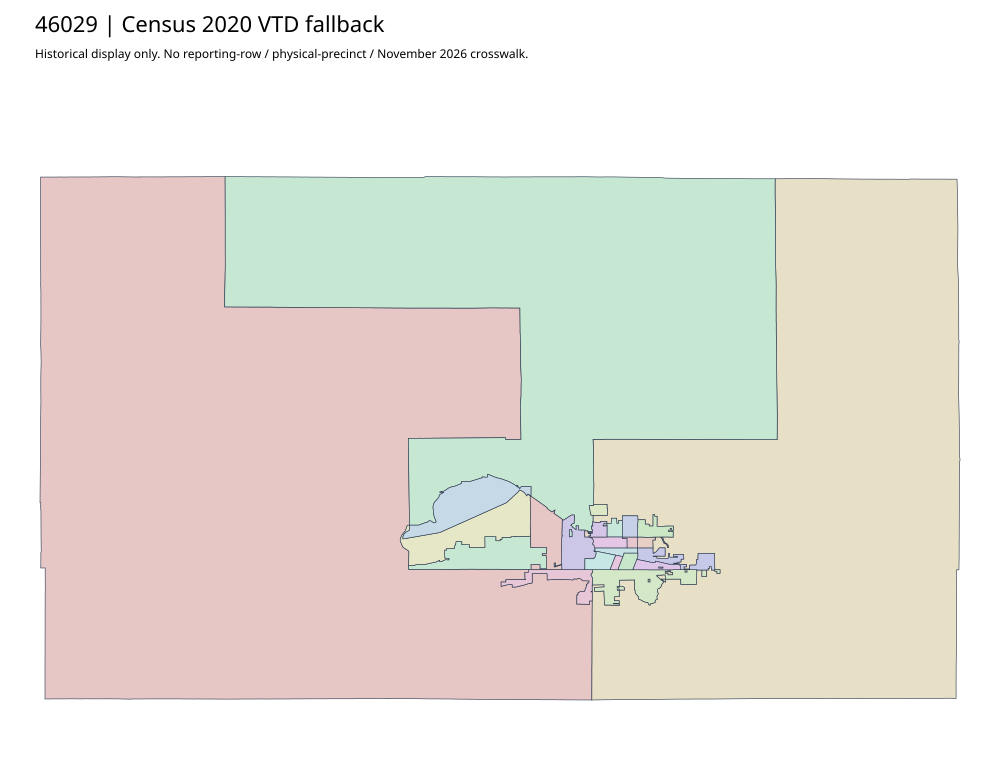

304 ordered indexCodington | 46029
Directory-listed codington.org hostname failed transport. Actual official codington.sdcounty.gov commissioners parent exposes the acquired WardsPrecincts2011Model PDF. Auditor parent has historical result exports, not a boundary crosswalk. Historical model map is qualified; no current precinct assignment inferred.
13 priority / 23 full historical observations. Parent is a summary ancestor, not additive to leaves. No physical feature matches or current reporting crosswalk approved.
Acquired shared-parent assets
map-46029-2e3d305c75f8 | complete1-page PDF; all-page contact sheet; complete page1; complete original gzip. Exact reconstruction: python -B scripts/reconstruct.py --id map-46029-2e3d305c75f8 /private/tmp/map.pdf
Census2020 fallback
24 native historical VTD features. Entire785-feature ZIP original retained once, all66 counties. Yankton has one countywide VTD. No current/reporting allocation. complete original gzip

Full binary/attribute/geometry QA
Observed authority/acquisition routes
Complete SOS authority fields including original blank/masked values: parent inventory. No contacts were sent.
Ordered full children
- Precinct-E1 (LAKE, Precinct-E4) | 1411 source votes | priority
- Precinct-C3 (PELICAN, Precinct-C4) | 1374 source votes | priority
- Precinct-A1 | 1204 source votes | priority
- Precinct-E2 (Precinct-E3) | 1195 source votes | priority
- Precinct-B3 (Precinct-C1) | 954 source votes | priority
- Precinct-B2 | 924 source votes | priority
- Precinct-B1 (Precinct-B4, Precinct-E5) | 916 source votes | priority
- Precinct-C2 (ELMIRA, Precinct-D4) | 696 source votes | priority
- Precinct-A3 (Precinct-A4) | 603 source votes | priority
- Precinct-D1 | 590 source votes | priority
- Precinct-A2 | 553 source votes | priority
- Precinct-D2 | 509 source votes | priority
- Precinct-D3 | 485 source votes | priority
- FULLER, FLORENCE | 307 source votes | remainder
- KRANZBURG, KRANZBURG | 272 source votes | remainder
- SHERIDAN | 262 source votes | remainder
- KAMPESKA (RICHLAND) | 259 source votes | remainder
- GERMANTOWN (RAUVILLE) | 243 source votes | remainder
- GRACELAND, HENRY, HENRY | 236 source votes | remainder
- EDEN, PHIPPS, WALLACE | 150 source votes | remainder
- LEOLA, SOUTH SHORE | 136 source votes | remainder
- WAVERLY | 117 source votes | remainder
- DEXTER | 114 source votes | remainder